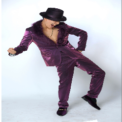
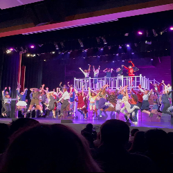
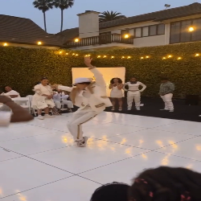
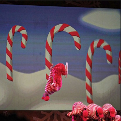
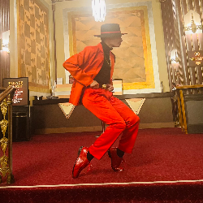
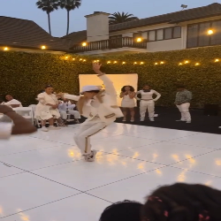
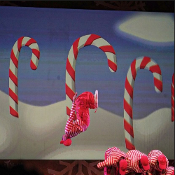
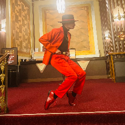

Aj Curtis
I’m Aj Curtis, a passionate Dramatic Arts major and professional entertainer dedicated to the art of performance, storytelling, and expression. Whether it's on stage, in front of a camera, or through digital media, my mission is to bring stories to life in the most captivating and meaningful ways possible.
With a background in acting, stage performance, and screen acting, I have trained extensively in character development, movement, voice work, and scene study. I believe that performance is more than just entertainment—it's an opportunity to inspire, connect, and transform audiences.
My Journey in the Performing Arts
Stage & Screen Performer: From classical theater to modern screen productions, I thrive in bringing dynamic characters to life.
Vocal & Physical Performance: Voice acting, musical theater, and stunt work are all part of my performance repertoire.
Improvisation & Scene Work: Adaptability and quick thinking allow me to engage in high-energy, fast-paced creative environments.
Beyond Acting: The Art of Entertainment
As a performer, I embrace every artistic medium—acting, music, dance, voiceover, and even gaming content creation.
I believe in breaking boundaries between entertainment industries, finding ways to blend theatrical performance with digital innovation. Whether it’s through interactive storytelling, live performances, or immersive media, I aim to push the limits of what entertainment can be.
Why Entertainment Matters
Performance is more than a craft—it’s a powerful force that shapes emotions, perspectives, and culture.
I want to inspire others, make people feel something real, and create moments that last beyond the stage or screen.
The Future is Bright
I’m constantly exploring new opportunities in acting, directing, voice work, and digital performance.
If you’re interested in collaborating on projects, creative storytelling, or just geeking out about entertainment and film, let’s connect! The best performances are yet to come.
Experience
Ensemble & Training with Cast
• Worked with and trained alongside the cast of MJ The Musical on Broadway
• Performed as part of the ensemble, learning advanced choreography and stage presence
• Gained hands-on experience with Broadway-level production and performance techniques
Ensemble & Training with Cast
• Performed as part of the ensemble in Tina Turner The Musical
• Trained with professional Broadway performers, refining vocal, dance, and acting skills
Lead Roles in High School Theatre
• Played lead and supporting roles in various high school theater productions
• Reviewed and graded student led theater projects
• Developed strong acting, vocal, and movement skills through rigorous rehearsals and live performances
• Gained experience in stage direction, improvisation, and working in a professional theater environment
Education
UC Riverside
Portfolio






 
